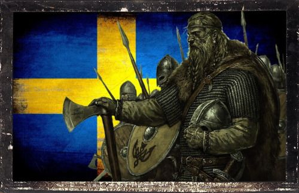
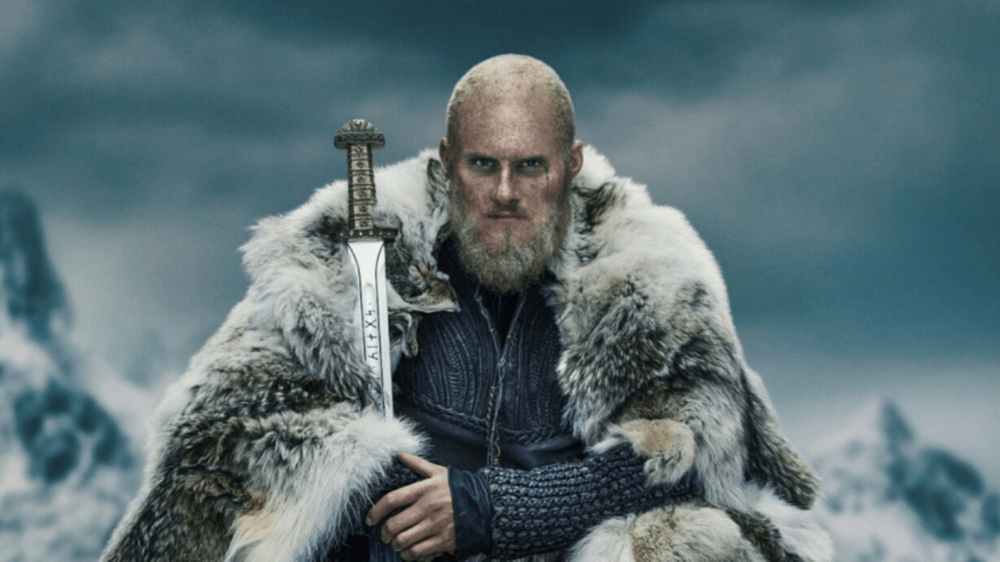

Епоха вікінгів
Епоха вікінгів
 Шведи
Шведи
Доба шведських вікінгів тривала десь з 8-го до 11-го століття. Вважається, що шведські вікінги та готландці переважно подорожувала на схід і південь: до Фінляндії, Балтійських країн, Білорусі, України, Чорного моря і навіть Багдаду. Їхні шляхи проходили через Дніпро у південному напрямку, до Константинополя, на який вони здійснили низку набігів. Візантійський імператор Феофіл помітив їхні військові навички й запросив їх на службу як власних охоронців, відомих також як Варязька гвардія. Шведські вікінги, відомі як руси, вважаються праотцями Київської Русі. Арабський мандрівник Ібн Фадлан так описував цих вікінгів:"Я бачив Русів під час їхніх торгових поїздок, коли ті таборувались в Волзі. Я ніколи не бачив більш фізично досконалих людей, зростом, як фінікова пальма, світлі і рум'яні; вони не носять ані туніків, ані каптанів, однак, чоловіки носять одяг, який покриває один бік тіла, і залишає домінантну руку вільною. Кожен має сокиру, меч і ніж, які носить з собою увесь час. Мечі широкі і рифлені, франкського сорту." Дії шведських вікінгів увічнені на багатьох рунічних каменях у Швеції, зокрема це Грецькі рунічні камені та Варязькі рунічні камені. Ними також було здійснено численні експедиції на захід, які увічнено на Англійських рунічних каменях. Останньою великою експедицію шведських вікінгів вважається злощасна експедиція Інгвара Мандрівника до Серкладу, регіону на південний схід від Каспійського моря. Жоден із членів цієї експедиції не вижив. Наразі достеменно невідомо, що з ними сталося, однак вважається, що вони померли від якоїсь хвороби.
Легендарні особи:
Бйорн Залізнобокий
Легенда: син Рагнара Лодброка, король Швеції, засновник династії Мунсе (за назвою пагорба, де він похований). Прізвисько пов'язано з трофейним металевим обладунком, який Бйорн одягав в бою. Прославився походами в південні землі: в 860 році спустошив середземноморське узбережжя Марокко, грабував Прованс, Іспанію та Італію. А ось в зіткненні з сарацинської ескадрою зазнав невдачі - використовуючи невідомий вікінгам «грецький вогонь», маври спалили сорок кораблів. У 867 році Бйорн був одним з командирів «великої армії», але в Англії пробув недовго.
Історія: основне джерело - саги. Однак в декількох хроніках франків згадується вождь вікінгів на ім'я Берно.
Епітафія: дуже розсудливий вікінг. Носив металеві обладунки - і плювати, що у вікінгів так не прийнято. Зіткнувшись з «грецьким вогнем» маврів, не став губити флот і відступив. «Журавлю в небі» (завоювання Англії) вважав за краще «синицю в руках» - панування над Швецією.